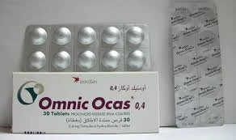
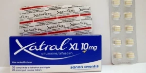
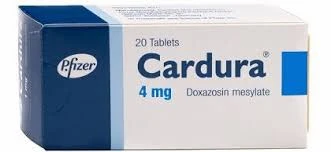
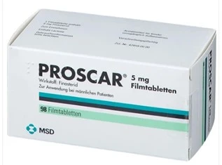
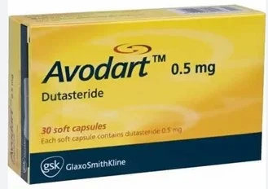
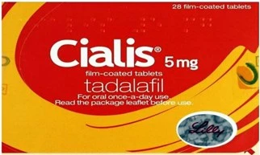

علاج تضخم البروستات الحميد بالأدوية
نظرة عامة على علاج تضخم البروستات الحميد بالأدوية المعطاه عن طريق الفم
كثير من الرجال الذين يعانون من تضخم البروستاتا لا يعانون من أعراض ذلك التضخم بما يكفي لبداية علاج تضخم البروستات الحميد بالأدوية أو حتى التدخل الجراحي مثل عملية تجريف البروستات. يجب تقييم جميع الرجال الذين يعانون من البروستاتا الكبيرة بشكل رسمي قبل أي تحديد للعلاج من أجل معرفة شدة الأعراض والتمييز بين الرجال الذين يعانون من البروستاتا الكبيرة غير المؤثرة (الغالبية) والمؤثرة. و ذلك يعني أن مرض تضخم البروستات قد لا ينتج عنه أعراض شديدة و قد تبقى الأعراض الخفيفة مستقرة لسنوات دون الحاجة لعلاج تضخم البروستات الحميد بالأدوية و لكن طبعاً مع المتابعة بالفحص أو التحاليل أو الصور بشكل منتظم.
أما في حال وجود أعراض متوسطة أو شديدة، دون وجود مضاعفات تضخم البروستات الحميد، فمن الأفضل البدء في علاج تضخم البروستات الحميد بالأدوية و ذلك لتجنب المشاكل او المضاعفات التي قد تنتج عن الانسداد المزمن المصاحب لتضخم البروستات الحميد. و في هذا المقال سنستعرض فقط علاج تضخم البروستات الحميد بالأدوية و ليس العلاج بالأعشاب أو المكملات الغذائية.
ما هو تضخم البروستاتا الحميد؟ أعراضه وأسبابه
تضخم البروستاتا الحميد هو نمو غير سرطاني لأنسجة البروستاتا. يحدث هذا النمو مع التقدم في السن، وعادة ما يظهر بعد سن الأربعين، ويزداد شيوعًا مع تقدم العمر. تظهر أعراض تضخم البروستاتا الحميد بسبب زيادة حجم البروستاتا والضغط على الإحليل، مما يعيق تدفق البول بشكل طبيعي.
تتمثل الأعراض الشائعة لتضخم البروستاتا الحميد في:
- (التبول المتكرر) ، خاصة أثناء الليل (التبول الليلي).
- صعوبة في بدء التبول.
- ضعف تدفق البول.
- الشعور بعدم تفريغ المثانة بالكامل بعد التبول.
- تقطر البول بعد الانتهاء من التبول.
يمكن أن تكون هذه الأعراض مزعجة وتؤثر على حياة المريض اليومية. وعلى الرغم من أن الحالة ليست خطيرة في حد ذاتها، إلا أنها قد تؤدي إلى مضاعفات مثل التهاب المسالك البولية، وتكون الحصى في المثانة، بالاضافة لاحتمال حدوث حصر البول، وفي الحالات الشديدة، قد يؤدي إلى تلف المثانة أو حتى تلف الكلى.
الطرق التقليدية لعلاج تضخم البروستاتا الحميد
يتوفر العديد من الخيارات لعلاج تضخم البروستاتا الحميد، وتشمل:
أولاً العلاج بالأدوية:
يعتمد على استخدام حاصرات مستقبلات ألفا (Alpha Blockers) التي تساعد في استرخاء العضلات المحيطة بالبروستاتا والمثانة، وكذلك مثبطات إنزيم 5-ألفا (5-Alpha Reductase Inhibitors) التي تقلل من حجم البروستاتا. بالاضافة لأدوية الأخرى
ثانياََ العلاج الجراحي أي العمليات:
في الحالات التي لا تستجيب للعلاج الدوائي أو في حال وجود مضاعفات من تضخم البروستات الحميد، قد يلجأ الأطباء إلى الجراحة لإزالة البروستات أو جزء من البروستاتا.
الأدوية الطبية المستخدمة في علاج تضخم البروستاتا الحميد
أولاً الأدوية حاصرات 1-ألفا: (alpha - Alpha-blockers)
هي مجموعة من الأدوية و التي تعمل على حصر (وقف) مفعول مستقبلات خاصة تُسَمى مستقبلات مستقبلات 1-ألفا الأدرينالية و هي فئة من المستقبلات الأدرينالية المتوزعة في جميع أنحاء جسم الإنسان و المسؤولة عن استقبال الاشارات من الأعصاب لإحداث انقباض في العضلات اللاإرادية في مختلف أعضاء و أنسجة الجسم و من هذه الأعضاء الحالب و المثانة و عنق المثانة و البروستات و الحبال المَنَوِيّة بالاضافة للقلب و الشرايين و الجهاز الهضمي و العيون و الجهاز العصبي وغيره. و يوجد عدة أنواع من المستقبلات الأدرينالية أمّا نوع المستقبلات الأدرينالية الموجودة في البروستات و المثانة و عنق المثانة و أيضاً في الحالبين فيسمى مستقبِل 1-ألفا و النوع الفَعَّال من هذه المستقبلات في المسالك البولية هو مستقبل 1-ألفا-A. و بذلك ينحصر عمل الأدوية حاصرات 1-ألفا على المسالك البولية لذلك فهي لا تُسْتخدم تقريباً إلا لهذا الدور و تكون الأعراض الجانبية لهذه الأدوية مرتبطاً بمفعولها على المسالك البولية أو بمفعولها على سائر أعضاء الجسم و بذلك يكون الهدف من استخدام حاصرات 1-ألفا هو تثبيط تأثير السيالات العصبية او الإشارات الهرمونية على خلايا العضلات الملساء في البروستاتا و الإحليل و عنق المقانة وبالتالي تقليل التوتر (الشَّد) في هذه الأماكن مما يؤدي لارتخاءها و تحسين إفراغ المثانة.
تعمل مستقبلات 1-ألفا الموجودة خارج المسالك البولية على إحداث بعض الأعراض الجانبية الناتجة عن علاج تضخم البروستات الحميد بالأدوية حاصرات 1-ألفا، هذا بالإضافة لوجود الأنواع الأخرى من مستقبلات 1-ألفا (و هي 1-ألفا-B و 1-ألفا-D) في المسالك البولية تشارك أيضا في حدوث الأعراض الجانبية الناتجة عن هذه الأدوية.
أمَّا بالنسبة للفاعلية في السيطرة على الأعراض فقد أوضحت الدراسات التي قامت بمقارنات بين الأدوية و تحديداً في علاج تضخم البروستات الحميد بالأدوية حاصرات 1-ألفا أن جميع حاصرات 1-ألفا لها فعالية مماثلة تقريباً عند استخدام الجرعات المناسبة لكل واحد منها و تستغرق التأثيرات السريرية المرغوب بها بضعة أسابيع لتكتمل، ولكن تبدأ فعالية الأدوية المباشرة في غضون ساعات و عادةً ما تتراوح نسبة التحسن في أعراض تضخم البروستات بين 30-50% عند استخدام أحد هذه الأدوية في علاج تضخم البروستات الحميد بالأدوية ويجدر الذكر هنا أن فاعلية العلاج قد تتأثر بحجم غدة البروستات و هي ذات فاعلية أعلى عندما يكون حجم البروستات المتضخمة أصغر و نُضيف على ذلك أن الأدوية حاصرات 1-ألفا لا تقلل من حجم البروستات و لا تمنع حدوث حصر البول الحاد على المدى البعيد.
و الآن ما هي الأعراض الجانبية للأدوية حاصرات 1-ألفا؟
تعتبر الأدوية حاصرات 1-ألفا بشكل عام من الأدوية قليلة الأعراض الجانبية و بالإمكان البقاء عليها لسنوات طويلة دون حدوث مشاكل كبيرة و من أعراضها الأكثر انتشاراً هي الشعور بالضعف العام و الدوخة و انخفاض الضغط خاصةً عند الوقوف، أما الأعراض الجانبية القليلة الحدوث و التي من الممكن أن تكون خطيرة هي تأثير هذه الأدوية على العيون؛ فهي معروفة بحدوث ما يسمى بمتلازمة القزحية المرنة خلال إجراء عمليات العيون مثل جراحات إعتام عدسة العين لذلك يجب إخبار طبيب العيون عن هذه الأدوية قبل العملية. أما عن تأثير الأدوية حاصرات 1-ألفا على الرغبة الجنسية و ضعف الانتصاب فهي لا تؤثر عليها و على العكس تماماً فإنها قد تُحَسِّن من القدرة على الانتصاب لكنها قد تؤثر على عملية قذف السائل المَنَوي حيث أنها تعمل على إرخاء العضلات الملساء في الحبال المَنَوية و عنق المثانة و ينتج عن عدم خروج السائل المنوي عند نسبة من المرضى الخاضعين لعلاج تضخم البروستات الحميد بالأدوية حاصرات 1-ألفا و هذه الظاهرة يسميها البعض بالقذف الراجع و لكنه اسم غير دقيق.
و من الأدوية حاصرات 1-ألفا الشائعة الاستخدام في علاج تضخم البروستات الحميد بالأدوية في الأردن التالي:
1- التامسولوسين (Tamsulosin) حيث قد يكون الأكثر انتشاراً من حيث الاستخدام و الإسم التجاري الأجنبي له هو الأومنِك (OmnicTM):
و هذا العلاج هو من حاصرات 1-ألفا الخاصة بالمسالك البولية و قد يكون الوحيد في الأردن الذي يحصر النوع 1-ألفا-A وهو المستقبل الأعلى فعالية، لذلك يختار العديد من الأطباء العلاج ب التامسولوسين (Tamsulosin) لمرضاهم. لكن الفاعلية الأعلى المتوقعة قد ينتج عنها مضاعفات أعلى تتعلق بالمفعول الأقوى في حصر المستقبل 1-ألفا-A مثل مشكلة عدم خروج السائل المنوي، فمن المعروف أن هذه المشكلة تزداد كلما كان العلاج أقوى في المفعول و هذا تماماً مت يحصل مع العلاج ب التامسولوسين (Tamsulosin) المعروف لدى الكثير من الناس بإسم Omnic، لكن تم التخفيف من هذه المشكلة بتصنيع العلاج بطريقه تجعل امتصاصه بطيئاً في الجِسم. و من الجدير بالذكر أيضاً أن علاج التامسولوسين (Tamsulosin) المعروف لدى الكثير من الناس بإسم Omnic لديه مفعول على مستقبل آخر و هو 1-ألفا-B و الذي عند تثبيطه يرخي المثانة بشكل خفيف مما يؤدي الى تخفيف أعراض تضخم البروستات بشكل إضافي. أما الأعراض الجانبية التي قد تنتج عن مفعول العلاج على أعضاء الجسم الأخرى فهي أقل في هذا النوع من الأدوية مثل الضعف العام و الشعور بالارهاق و انخفاض ضغط الدم و السبب كما ذكرنا سابقاً هو فاعلية هذا العلاج المنحصرة تقريباً في المسالك البولية فقط. هذا بالإضافة لمفعول الأدوية حاصرات 1-ألفا و استخدامها في حصى الحالب و مع تفتيت حصى الكلى بالموجات الصادمة.
2. الألفيوزوسين (Alfuzosin) و هو يحتل المرتبة الثانية من حيث انتشار استخدامه و الاسم التجاري له هو زاترال (Xatral):
و هو من حاصرات 1-ألفا الخاصة بالمسالك البولية و لكن عمله ليس خاصاً بمستقبل 1-ألفا-A لذلك فإن الأعراض الجانبية فيه و التي تنتج عن قوة مفعول العلاج تكون أقل عند استخدامه كعلاج لتضخم البروستات الحميد بالأدوية وهذه الأعراض الأقل تشتمل على انعدام خروج السائل المَنوي و متلازمة القزحية المرنة أثناء جراحة العين و هذا يجعل دواء الألفيوزوسين (Alfuzosin) أو Xatral بديلاً جيداً لمن يحصل لديهم مضاعفات من التامسولوسين (Tamsulosin) أو Omnic.
3. الدوكْسازوسين (Doxazosin) و الاسم التجاري له هو الكاردورا (Cardura):
يُعتبر من حاصرات 1-ألفا العامة فهو يمنع مستقبلات 1-ألفا ككل دون خصوصية للمستقبِل الأهم و هو 1-ألفا-A لذلك فإن أعراضه الجانبية خارج المسالك البولية أكثر و من هذه الآثار الجانبية هو انخفاض ضغط الدم خصوصاً عند الوقوف و خفقان القلب و القُساح (الإنتصاب فترة طويلة) أو ما يعرف بمرض (برايابيزم Priapism) حيث ذكرنا أنّ علاج تضخم البروستات الحميد بالأدوية حاصرات 1-ألفا قد تؤدي إلى تحسين القدرة على الانتصاب لكن اذا زاد ذلك عن حده فيمكن أن يتحول لحالة مرضية و يمكن تجنب هذه المشكلة بأخذ حاصر 1-ألفا الخاص بالنوع 1-ألفا-A و هو التامسولوسين (Tamsulosin) و الإسم التجاري الأجنبي له هو الأومنِك (OmnicTM)، هذا بالاضافة لأعراض أخرى مشتركة مع الباقي مثل الشعور بالضعف العام أو الإرهاق و انعدام القذف و غيرها.
في النهاية يجب التنويه أن جميع أدوية حاصرات 1-ألفا المستخدمة في علاج تضخم البروستات الحميد بالأدوية تتشارك بفَعاليَّة سريرية متقاربة جداً و أنها إنَّما تختلف في درجات و حدة الآثار الجانبية و هي خط العلاج الأول في أعراض تضخم البروستات الحميد.
ثانياً مثبطات اختزال الهرمون الذكري التستوستيرون:
الهرمون الذكري أو التستوستيرون هو هرمون الذكورة الأساسي و الذي يلعب دورًا رئيسيًا في نمو الأنسجة التناسلية الذكرية مثل الخصيتين والبروستاتا فضلاً عن تعزيز الخصائص الجنسية الثانوية مثل زيادة كتلة العضلات والعظام ونمو شعر الجسم، لكن بعض أنسجة الجسم تقوم بتحويل الهرمون الذكري التستوستيرون إلى شكل آخر و أقوى من ناحية الفاعلية بأضعاف و هذا الشكل إسمه ديهدروتستوستيرون و يختصر ب(DHT) و الإنزيم الذي يقوم بعملية التحويل هذه (اختزال الهرمون الذكري التستوستيرون) موجود في أنسجة غدة البروستاتا والحويصلات المنوية والبربخ والجلد وبصيلات الشعر والكبد والدماغ، كما و يوجد من هذا الإنزيم نوعان؛ النوع الأول يتركز أكثر في الأعضاء غير غدة البروستات أما النوع الثاني فهو الرئيسي في غدة البروستات. إذا فهذه المجموعة من الأدوية تعمل على ايقاف مفعول هرمون الديهدروتستوستيرون عن طريق تثبيط الإنزيم الذي ينتجه و بذلك تؤدي الى ايقاف نمو البروستات و انكماشها.
تُستخدم مثبطات اختزال الهرمون الذكري في علاج تضخم البروستات الحميد بالأدوية كوسيلة لجعل حجم غدة البروستات أصغر و بالتالي قد يساعد في السيطرة على الأعراض، خاصة اذا تم استخدامها مع الأدوية حاصرات 1-ألفا، مع أن المعروف أن الأعراض لا تتناسب طردياً مع حجم البروستات دائماً.
تتوفر مثبطات اختزال الهرمون الذكري التستوستيرون في شكلين رئيسيين للاستخدام السريري و هما الفيناسترايد و الدوتاستيريد؛ حيث يعمل الفيناسترايد على تثبيط الإنزيم من النوع الثاني فقط و هو النوع الموجود بكثرة في غدة البروستات، أما الدوتاستيريد فيقوم بتثبيط النوعين من الإنزيم معاً و كلا العلاجين يؤدي الى ضمور غدة البروستات و إلى تصغير حجم البروستاتا بحوالي 18-28٪ وانخفاض في مستويات المستضد البروستاتي النوعي بحوالي 50٪ بعد ستة إلى اثني عشر شهرًا من العلاج.
الفيناستيرايد: الاسم التجاري المتعارف عليه هو البروسكار (Proscar)
أما الدوتاستيريد: فالاسم التجاري المتعارف عليه هو (Avodart)
وبالنسبة لفعالية العلاجين فقد أشارت دراسات المقارنة إلى أن دوتاستيريد وفيناسترايد لهما نفس القدر من الفعالية في علاج أعراض تضخم البروستات و أن العلاج بأحد هذين الشكلين من الأدوية يمكن أن يغير يَحُد من تسارع أعراض تضخم البروستات من خلال تقليل مخاطر حصول حصر البول الحاد والحاجة إلى التدخل الجراحي. لكن تبقى مشكلة الأعراض الجانبية الناتجة عن أثر هذه الأدوية على الهرمون الذكري و هي ضعف الانتصاب وانخفاض الرغبة الجنسية واضطرابات القذف و التثدي، و نادراً متلازمة ما بعد فيناسترايد؛ و هي حصول الآثار الجانبية الجنسية (أي انخفاض الرغبة الجنسية ، ضعف الانتصاب ، قلة الإثارة وصعوبة الوصول إلى النشوة الجنسية) ، الاكتئاب والقلق ومشاكل في الادراك و التي قد تستمر حتى بعد ايقاف العلاج.
ثالثاً مثبطات إنزيم الفوسفودايإستاريز (و هي ذاتها أدوية ضعف الإنتصاب):
لقد ثبت أن هذه الادوية لا تحسن وظيفة الانتصاب فحسب، بل هي أيضًا علاج فعال لأعراض تضخم البروستات و بناءاً على الدراسات التي أجريت على هذه الأدوية في مجال تضخم البروستات الحميد تمت اعتماد علاج تادالافيل 5 ملغم يوميًا ، نظرًا لعمره النصفي الأطول ، لأعراض تضخم البروستات عند الرجال.
مثال: علاج التادالافيل يعرف بالاسم التجاري الأجنبي سيالِس (Cialis).
ملخص علاج تضخم البروستات الحميد بالأدوية
تتنوع خيارات علاج تضخم البروستات الحميد بالأدوية؛ حيث في حين أنَّ العلاج بالأدوية حاصرات 1-ألفا يساعد على السيطرة على الأعراض بشكل أساسي و يعتبر الخيار الأول لكن الأدوية حاصرات 1-ألفا لا تقلل من احتمالات حدوث حصر البول و لا تقلل من احتمالات الحاجة لإجراء العمليات، أما علاج تضخم البروستات الحميد بالأدوية مثبطات اختزال الهرمون الذكري التستوستيرون فيقلل من حجم غدة البروستات و يقلل من احتمالات حصر البول و العمليات لكن على حساب وجود مضاعفات غير مرغوب بها؛ وثبت علمياً فعالية استخدام أدوية الانتصاب (التادالافيل تحديداً) كجزء من علاج تضخم البروستات الحميد بالأدوية؛ هذا بالاضافة لوجود أدوية أخرى تساعد في حل بعض المشكلات التي قد تصاحب تضخم البروستات الحميد مثل الأدوية التي تحد من الإدرار ليلاً و أدوية السلس البولي و غيرها. لذلك فمن الأفضل زيارة طبيب مختص في جراحة مسالك البولية و مناقشة العلاج سواءاً بالأدوية أو بالجراحة.
مراجع علاج تضخم البروستات الحميد بالأدوية:
- Ball AJ, Feneley RC, Abrams PH. The natural history of untreated "prostatism". Br J Urol. 1981;53(6):613-616. doi:10.1111/j.1464-410x.1981.tb03273.x.
- Kirby RS. The natural history of benign prostatic hyperplasia: what have we learned in the last decade?. Urology. 2000;56(5 Suppl 1):3-6. doi:10.1016/s0090-4295(00)00747-0.
- Isaacs JT. Importance of the natural history of benign prostatic hyperplasia in the evaluation of pharmacologic intervention. Prostate Suppl. 1990;3:1-7. doi:10.1002/pros.2990170502.
- Netto NR Jr, de Lima ML, Netto MR, D'Ancona CA. Evaluation of patients with bladder outlet obstruction and mild international prostate symptom score followed up by watchful waiting. Urology. 1999;53(2):314-316. doi:10.1016/s0090-4295(98)00475-0.
- Michel MC, Vrydag W. Alpha1-, alpha2- and beta-adrenoceptors in the urinary bladder, urethra and prostate. Br J Pharmacol. 2006;147 Suppl 2(Suppl 2):S88-S119. doi:10.1038/sj.bjp.0706619.
- Barendrecht MM, Abrams P, Schumacher H, de la Rosette JJ, Michel MC. Do alpha1-adrenoceptor antagonists improve lower urinary tract symptoms by reducing bladder outlet resistance?. Neurourol Urodyn. 2008;27(3):226-230. doi:10.1002/nau.20481.
- Djavan B, Chapple C, Milani S, Marberger M. State of the art on the efficacy and tolerability of alpha1-adrenoceptor antagonists in patients with lower urinary tract symptoms suggestive of benign prostatic hyperplasia. Urology. 2004;64(6):1081-1088. doi:10.1016/j.urology.2004.07.031.
- Michel MC, Mehlburger L, Bressel HU, Goepel M. Comparison of tamsulosin efficacy in subgroups of patients with lower urinary tract symptoms. Prostate Cancer Prostatic Dis. 1998;1(6):332-335. doi:10.1038/sj.pcan.4500267.
- Djavan B, Fong YK, Harik M, et al. Longitudinal study of men with mild symptoms of bladder outlet obstruction treated with watchful waiting for four years. Urology. 2004;64(6):1144-1148. doi:10.1016/j.urology.2004.08.049.
- Fusco F, Palmieri A, Ficarra V, et al. α1-Blockers Improve Benign Prostatic Obstruction in Men with Lower Urinary Tract Symptoms: A Systematic Review and Meta-analysis of Urodynamic Studies. Eur Urol. 2016;69(6):1091-1101. doi:10.1016/j.eururo.2015.12.034.
- Roehrborn CG. Three months' treatment with the alpha1-blocker alfuzosin does not affect total or transition zone volume of the prostate. Prostate Cancer Prostatic Dis. 2006;9(2):121-125. doi:10.1038/sj.pcan.4500849.
- Karavitakis M, Kyriazis I, Omar MI, et al. Management of Urinary Retention in Patients with Benign Prostatic Obstruction: A Systematic Review and Meta-analysis. Eur Urol. 2019;75(5):788-798. doi:10.1016/j.eururo.2019.01.046.
- Nickel JC, Sander S, Moon TD. A meta-analysis of the vascular-related safety profile and efficacy of alpha-adrenergic blockers for symptoms related to benign prostatic hyperplasia. Int J Clin Pract. 2008;62(10):1547-1559. doi:10.1111/j.1742-1241.2008.01880.x.
- Chatziralli IP, Sergentanis TN. Risk factors for intraoperative floppy iris syndrome: a meta-analysis. Ophthalmology. 2011;118(4):730-735. doi:10.1016/j.ophtha.2010.08.039.
- van Dijk MM, de la Rosette JJ, Michel MC. Effects of alpha(1)-adrenoceptor antagonists on male sexual function. Drugs. 2006;66(3):287-301. doi:10.2165/00003495-200666030-00002.
- Gacci M, Ficarra V, Sebastianelli A, et al. Impact of medical treatments for male lower urinary tract symptoms due to benign prostatic hyperplasia on ejaculatory function: a systematic review and meta-analysis. J Sex Med. 2014;11(6):1554-1566. doi:10.1111/jsm.12525.
- Rittmaster RS, Norman RW, Thomas LN, Rowden G. Evidence for atrophy and apoptosis in the prostates of men given finasteride. J Clin Endocrinol Metab. 1996;81(2):814-819. doi:10.1210/jcem.81.2.8636309.
- Naslund MJ, Miner M. A review of the clinical efficacy and safety of 5alpha-reductase inhibitors for the enlarged prostate. Clin Ther. 2007;29(1):17-25. doi:10.1016/j.clinthera.2007.01.018.
- Nickel JC, Gilling P, Tammela TL, Morrill B, Wilson TH, Rittmaster RS. Comparison of dutasteride and finasteride for treating benign prostatic hyperplasia: the Enlarged Prostate International Comparator Study (EPICS). BJU Int. 2011;108(3):388-394. doi:10.1111/j.1464-410X.2011.10195.x.
- McConnell JD, Bruskewitz R, Walsh P, et al. The effect of finasteride on the risk of acute urinary retention and the need for surgical treatment among men with benign prostatic hyperplasia. Finasteride Long-Term Efficacy and Safety Study Group. N Engl J Med. 1998;338(9):557-563. doi:10.1056/NEJM199802263380901.
- Roehrborn CG, Boyle P, Nickel JC, Hoefner K, Andriole G; ARIA3001 ARIA3002 and ARIA3003 Study Investigators. Efficacy and safety of a dual inhibitor of 5-alpha-reductase types 1 and 2 (dutasteride) in men with benign prostatic hyperplasia. Urology. 2002;60(3):434-441. doi:10.1016/s0090-4295(02)01905-2.
- Diviccaro S, Melcangi RC, Giatti S. Post-finasteride syndrome: An emerging clinical problem. Neurobiol Stress. 2019;12:100209. Published 2019 Dec 26. doi:10.1016/j.ynstr.2019.100209.
- Nguyen DD, Marchese M, Cone EB, et al. Investigation of Suicidality and Psychological Adverse Events in Patients Treated With Finasteride. JAMA Dermatol. 2021;157(1):35-42. doi:10.1001/jamadermatol.2020.3385.
- Oelke M, Giuliano F, Mirone V, Xu L, Cox D, Viktrup L. Monotherapy with tadalafil or tamsulosin similarly improved lower urinary tract symptoms suggestive of benign prostatic hyperplasia in an international, randomised, parallel, placebo-controlled clinical trial. Eur Urol. 2012;61(5):917-925. doi:10.1016/j.eururo.2012.01.013.
- Gacci M, Corona G, Salvi M, et al. A systematic review and meta-analysis on the use of phosphodiesterase 5 inhibitors alone or in combination with α-blockers for lower urinary tract symptoms due to benign prostatic hyperplasia. Eur Urol. 2012;61(5):994-1003. doi:10.1016/j.eururo.2012.02.033.